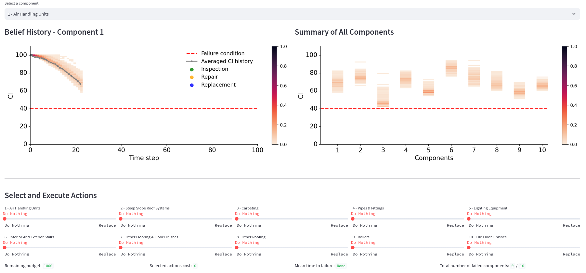

InfraLib is a sophisticated simulation framework designed to enable research into reinforcement learning and decision making for large-scale infrastructure management...
Designed to handle large-scale infrastructure systems, InfraLib ensures scalability and computational efficiency for simulations spanning millions of components.
Collect and analyze expert management strategies to inform and improve reinforcement learning models, ensuring real-world applicability and effectiveness. 